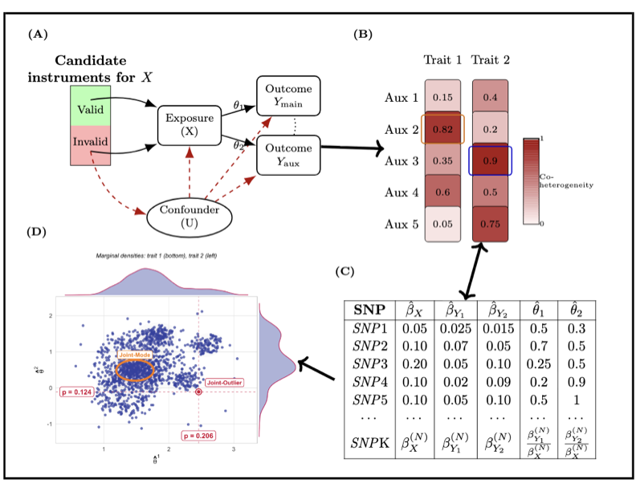

IBMR is an R package for instrument borrowing in Mendelian randomization (MR) using summary-level genetic association data.
The package is motivated by the setting in which a primary outcome may share overlapping valid instruments, or similar mechanisms of instrument invalidity, with one or more related auxiliary outcomes for a given exposure. When this shared structure is present, auxiliary traits can be used to improve robustness and efficiency in downstream MR analysis.
IBMR provides three main components:
-
coheterogeneity_Q()for coheterogeneity-based auxiliary trait screening -
IBMODE()for multidimensional mode-based estimation with instrument borrowing -
IBPRESSO()for MR-PRESSO with an auxiliary trait
Conceptual Workflow

The website is organized around the same workflow implemented in the package:
- provide SNP-level summary statistics for an exposure, a primary outcome, and one or more candidate auxiliary outcomes
- screen candidate auxiliary traits using coheterogeneity
- select the most informative auxiliary trait
- carry the selected auxiliary trait into downstream robust MR analysis
Installation
Install the package from GitHub with:
install.packages("devtools")
library(devtools)
devtools::install_github("achatto4/IBMR")
library(IBMR)Minimal Example
library(IBMR)
data("toy_ibmr_example")
cohet_res <- coheterogeneity_Q(
BetaXG = toy_ibmr_example$BetaXG,
BetaYG_matrix = toy_ibmr_example$BetaYG_matrix,
seBetaXG = toy_ibmr_example$seBetaXG,
seBetaYG_matrix = toy_ibmr_example$seBetaYG_matrix,
F_min = 5,
min_K_pair = 20
)
round(cohet_res$rho, 3)
cohet_res$flagArticles
The package website includes two main articles:
- Auxiliary Trait Selection: coheterogeneity-based screening of candidate auxiliary traits
- Instrument Borrowing Workflow: end-to-end use of the selected auxiliary trait in
IBMODE()andIBPRESSO()
Reference
Function-level documentation is available under the Reference tab, including:
coheterogeneity_Q()IBMODE()IBPRESSO()toy_ibmr_example